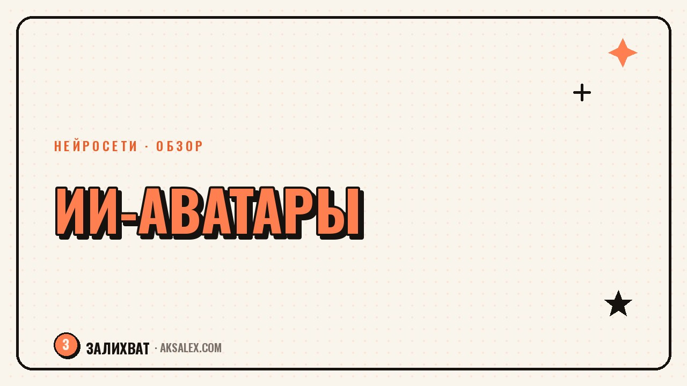

AI Avatars for Blogging: Overview and How to Use Them

An AI avatar is a digital character or a digital copy of yourself that speaks the text on camera in your place. The technology has come a long way: avatars sync lip movement with speech, shift their expressions, and even gesture. But before you build your blog around an avatar, it's worth understanding where it actually saves you time — and where it just creates distance between you and your audience.
What an AI avatar is and why a blogger needs one
There are two main types of avatars. The first is a ready-made digital character from the service's library — you simply enter text, and the character voices it and "speaks" it on camera. The second is your own digital double, created from a video recording of your face and voice. It looks more like you, but requires time to film the source footage.
The main reason bloggers use avatars is to save time on filming. You don't have to switch on the camera, set up lighting, and reshoot takes every time you flub a line. Just write the text, and the avatar will voice it in a couple of minutes.
When an avatar helps, and when it hurts
- Helps: educational content where information matters more than emotion
- Helps: quick news and reviews without a personal story
- Hurts: content about personal experience and vulnerability
- Hurts: a blog where the audience is already used to seeing your real face
If your audience follows you specifically for your facial expressions, intonation, and reactions, an abrupt switch to an avatar can feel like a deception, even if the words are still yours. Transparency matters here: be upfront that it's a digital version rather than hiding it.
How to introduce an avatar without losing trust
Step 1. Pick a format for the avatar
Don't switch your whole blog to an avatar right away. Start with one segment — for example, short niche news digests or answers to frequently asked questions, where personal emotion isn't critical.
Step 2. Keep your speaking style in the script
The avatar voices whatever you've written. If the text reads like a dry summary churned out by a neural network, the avatar will only amplify the "lifeless" feel of the content. Write the script the way you actually talk, with pauses and natural phrasing.
An avatar doesn't rescue a weak script — it just delivers it faster. The problem of poor content stays exactly the same.
Table: comparing approaches
| Format | Advantage | Risk |
|---|---|---|
| Ready-made character from a library | Quick start, no filming needed | Doesn't look like you, less trust |
| Your own digital double | Looks like you, recognizable | Requires quality source footage |
| Live filming | Maximum trust and emotion | Takes more time |
Legal and ethical considerations
If you're using a digital copy of your own face, that's entirely your right. But creating an avatar "as" a famous person, or using someone else's likeness without consent, is a direct violation and a serious reputational risk for your blog.
You should also label a video as created with an AI avatar if the platform you're publishing on requires it. Transparency works in your favor here: audiences value honesty more than the absence of a disclosure label.
Where to start if you've never tried it
Test the avatar on one short clip that isn't critical to your blog's reputation — for example, an announcement or a digest. Watch how the audience reacts in the comments and how it affects retention in your analytics.
If the reaction is neutral or positive, gradually expand its use to other formats. If you notice a drop in engagement or direct comments about the video feeling "lifeless," go back to live filming for your key segments and keep the avatar only for secondary content.
Frequently Asked Questions
Can an AI avatar fully replace live filming in a blog?
Technically, yes, but for content built on personal trust and emotion, live filming usually works better. An avatar is convenient for informational formats.
Should you tell your audience that a video was voiced by an avatar?
Yes, it's honest toward your viewers and often required by platform rules. Transparency doesn't lower trust — it actually strengthens it.
How long does it take to create your own digital double?
It depends on the service, but you usually need at least a few minutes of quality video footage to train the model, plus processing time.
Can you use a famous blogger's avatar for your own content?
No, without that person's consent this violates image and voice rights and creates a serious reputational risk.
Which content format is best to start using an avatar with?
Short informational clips like digests or answers to frequently asked questions, where personal emotion isn't the main factor.
not by hand